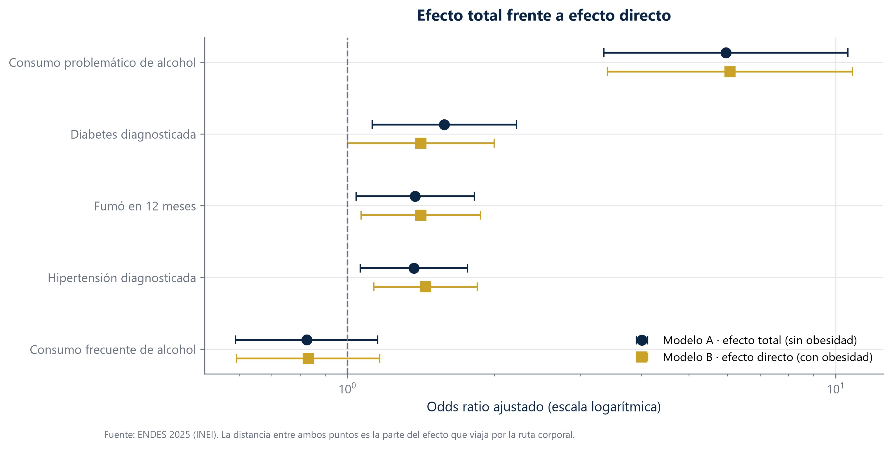
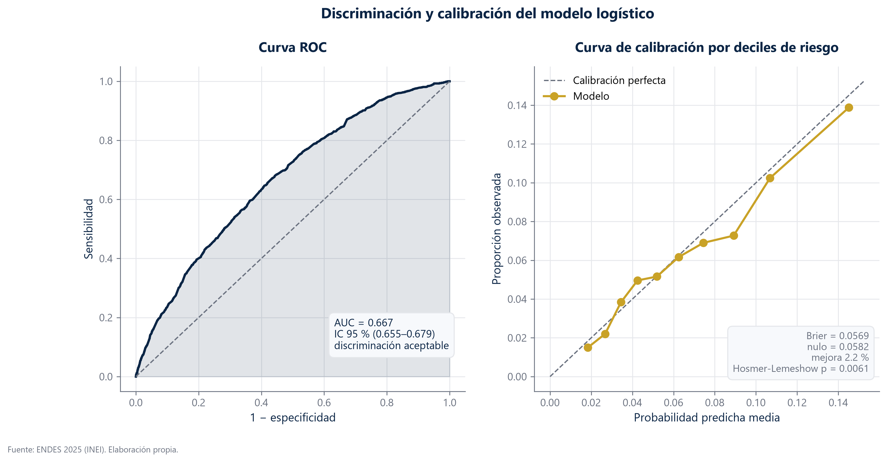

El modelo
Hasta aquí hemos mirado un factor a la vez. Un modelo los mira todos juntos y responde otra pregunta: si dos personas se diferencian solo en una cosa, ¿cuánto cambia eso?
Qué es una regresión logística
Imagine una balanza. Cada característica de una persona —su sexo, su edad, si tiene hipertensión— pone un peso a un lado o al otro. La regresión logística es el procedimiento que decide cuánto pesa cada cosa, mirando a la vez a las 28 553 personas del análisis.
Su resultado, el odds ratio, se lee así: un valor de 2 significa que la característica duplica las probabilidades; uno de 0,5, que las reduce a la mitad; uno de 1, que no cambia nada. Y lo hace manteniendo lo demás constante, que es justamente lo que no podíamos hacer comparando de a dos.
Efecto total y efecto directo
Surge aquí una decisión que no es técnica sino conceptual. Si beber alcohol contribuye a la obesidad, y la obesidad contribuye a la depresión, ¿debemos descontar la obesidad al medir el efecto del alcohol?
Depende de qué se quiera saber. Si preguntamos «¿cuánto aporta beber, por todas las vías?», la respuesta no debe descontarla: la ruta corporal es parte del efecto. Si preguntamos «¿cuánto aporta beber por vías que no pasan por el cuerpo?», sí. Son dos preguntas distintas, así que reportamos las dos.
Descontar la obesidad casi no cambia nada, y eso también es un resultado
Los círculos son el efecto completo; los cuadrados, lo que queda tras descontar la ruta corporal. Están casi encima. La única excepción es la diabetes, donde alrededor de una cuarta parte del efecto sí viaja por ahí. Antes de calcular nada comprobamos el primer eslabón: de las cinco exposiciones, solo tres se asocian con la obesidad. Para las otras dos no hay ruta que descontar.

| Exposición | Efecto total | Efecto directo | Lectura |
|---|---|---|---|
| Consumo frecuente de alcohol | 0.83 (0.59–1.15) | 0.83 (0.59–1.16) | Sin mediación apreciable por la vía corporal |
| Consumo problemático de alcohol | 5.96 (3.35–10.59) | 6.07 (3.41–10.82) | Sin mediación apreciable por la vía corporal |
| Fumó en 12 meses | 1.38 (1.04–1.82) | 1.41 (1.07–1.87) | Parte del efecto pasa por la obesidad |
| Hipertensión diagnosticada | 1.37 (1.06–1.76) | 1.45 (1.13–1.84) | Parte del efecto pasa por la obesidad |
| Diabetes diagnosticada | 1.58 (1.12–2.22) | 1.41 (1.00–2.00) | Parte del efecto pasa por la obesidad |
Qué tan bien funciona
El modelo acierta dos de cada tres veces al comparar dos personas al azar
Una curva ROC es como este juego: se toman dos personas al azar, una con sintomatología depresiva y otra sin ella, y se le pregunta al modelo cuál es cuál. Un AUC de 0,67 quiere decir que acierta dos de cada tres veces. Está por encima del azar, que sería 0,5, y muy lejos de la certeza. Sirve para decidir dónde poner un servicio; no sirve para decidir sobre una persona.
- En la curva ROC, cuanto más se despega la línea de la diagonal, mejor distingue el modelo.
- En la curva de calibración, la diagonal es el ideal: cuando el modelo dice «10 %», debería acertar el 10 % de las veces.
- Que los puntos sigan la diagonal significa que las probabilidades son creíbles, aunque el modelo no distinga con mucha finura.

| Qué se evaluó | Resultado | Interpretación |
|---|---|---|
| Eventos por variable (EPV) | 104.2 | Holgado |
| Discriminación (AUC) | 0.667 (0.655–0.679) | discriminación aceptable |
| Bondad de ajuste (Hosmer-Lemeshow) | χ² = 21.42, gl = 8, p = 0.0061 | Rechaza el ajuste, pero con N grande la prueba es hipersensible: juzgar la calibración por la curva y el Brier score |
| Calibración (Brier) | 0.0569 | Brier 0.0569 frente a 0.0582 del modelo nulo (mejora del 2.2 %) |
| Linealidad del logit en edad (Box-Tidwell) | p = 0.0000 | El logit NO es lineal: usar splines o categorizar |
| Sensibilidad (corte en la prevalencia) | 0.672 | Umbral 0.0621; el modelo está calibrado, así que el corte en la prevalencia es interpretable |
| Especificidad (mismo corte) | 0.564 | Compromiso propio de un tamizaje: capta más casos a costa de más falsos positivos |
| AUC-PR | 0.1169 | Frente a 0.0621 del azar: 1.9 veces mejor |
| Exactitud del modelo trivial | 0.938 | Referencia obligada: predecir 'nadie' acierta el 93 % |